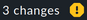

1. Setup-Menü
Ihr Einstieg in die Konfiguration von Checkmk ist das Setup-Menü, das Sie über die Navigationsleiste öffnen können:
In diesem Menü finden Sie die Werkzeuge, mit denen Sie Checkmk einrichten und konfigurieren können. Das Menü ist nach Themen (topics) untergliedert. Unterhalb jedes Themas finden Sie die Menüeinträge.
Die folgende Tabelle gibt einen Überblick über die Menüs, und in welchem Teil des Handbuchs Sie genauere Informationen erhalten.
| Menü | Inhalt |
|---|---|
Hosts |
Die Verwaltung der zu überwachenden Hosts. Hier finden Sie die Hosts, die Regeln für das Monitoring der Hosts, die Host-Merkmale, die Verbindungen für die dynamische Host-Verwaltung, die Host-Gruppen und die Regeln für die Hardware/Software-Inventur. Mit den Custom host attributes können Sie selbst Attribute erstellen, die den Eigenschaften der Hosts hinzugefügt werden. |
Services |
Die Verwaltung der Services, die auf den Hosts laufen. Hier finden Sie die Regeln für das Monitoring der Services, für die Service-Erkennung, für erzwungene Services (manuelle Checks) und für die Überwachung von Netzwerkdiensten wie HTTP, TCP, E-Mail (aktive Checks). Außerdem können Sie die Liste der Service-Gruppen und den Katalog der Check-Plugins in Checkmk öffnen. |
Business Intelligence |
Der Einstieg in die Verwaltung der Business Intelligence (BI). |
Agents |
Die Monitoring-Agenten, die die Daten von den Hosts übermitteln.
Hier gibt es die
Checkmk-Agenten für Linux, Windows und andere Betriebssysteme zum Download und in den |
Events |
Die Verarbeitung von Ereignissen — mit Regeln für Benachrichtigungen, Event Console und Alert Handler. |
Users |
Die Themen rund um Benutzer, Zuständigkeiten und Berechtigungen. Sie können die Listen der Benutzer, Kontaktgruppen und Rollen aufrufen und die Benutzerverwaltung mit LDAP/Active Directory einrichten. |
General |
Übergreifende Themen finden Sie hier, u.a. Rule search zum (Wieder-)finden von Regeln, die globalen Einstellungen (Global settings), die Liste der Zeitperioden und den Einstieg in das verteilte Monitoring. Mit Audit log können Sie sich alle jemals durchgeführten Änderungen der Konfigurationsumgebung anzeigen lassen und mit dem Read only mode solche Änderungen temporär unterbinden. |
Maintenance |
Dieses Thema fasst Aktionen zur Wartung von Checkmk zusammen, wie z.B. die Erstellung von Backups, den Umgang mit Checkmk Erweiterungspaketen (MKPs) oder die Erstellung von Support Diagnostics Daten. |
Die Konfiguration wird von Checkmk in handlichen Textdateien gespeichert, welche erfahrene Benutzer auch von Hand editieren oder sogar per Skript erzeugen können.
2. Quick setup
Wenn Sie schon länger mit dem Setup-Menü arbeiten, werden Sie die Symbole im Menü wahrscheinlich schon auswendig kennen — insbesondere dann, wenn Sie sich die Symbole in den Mega-Menüs bei jedem Menüeintrag anzeigen lassen, wie Sie es im User-Menü einstellen können.
Dann empfiehlt sich für den Schnellzugriff das Snapin Quick setup für die Seitenleiste mit Symbolen für jeden Setup-Menüeintrag:
Übrigens gibt es auch das komplette Setup-Menü für die Seitenleiste. Dieses Snapin hört auf den Namen Setup.
3. Änderungen aktivieren
Checkmk speichert alle Änderungen, die Sie vornehmen, zunächst nur in einer vorläufigen Konfigurationsumgebung, in der Sie Hosts, Services und Einstellungen verwalten, und die das aktuell laufende Monitoring noch nicht beeinflusst. Erst durch das „Aktivieren der aufgelaufenen Änderungen“ werden diese in die Monitoring-Umgebung übernommen.
Änderungen in der Konfiguration — z.B. das Hinzufügen eines neuen Hosts — haben also zunächst keinen Einfluss auf das Monitoring. Erst durch die Aktivierung werden alle Änderungen, die sich seit der letzten Aktivierung angesammelt haben, gleichzeitig aktiv.
Vielleicht mag Ihnen das umständlich erscheinen. Es hat aber den Vorteil, dass Sie eine komplexere Änderung erst in Ruhe vorbereiten können, bevor diese produktiv geht. So kann es z.B. sein, dass Sie nach dem Hinzufügen eines Hosts erst noch Schwellwerte setzen oder manche Services entfernen möchten, bevor das Ganze „scharfgeschaltet“ werden soll.
Wann immer Sie mit dem Setup-Menü eine Änderung an der Monitoring-Umgebung durchführen, wird diese zunächst gesammelt und gilt als pending. Sie finden auf jeder Seite der Konfigurationsumgebung rechts oben die Information, wie viele Änderungen sich bisher angesammelt haben, die noch nicht aktiviert sind, z.B. den Knopf . Dieser Knopf bringt Sie zu einer Liste dieser Änderungen:
Durch Klick auf Activate on selected sites wird aus den Konfigurationsdateien eine neue Konfiguration für den Monitoring-Kern erzeugt und diesem der Befehl gegeben, diese Konfiguration ab sofort zu verwenden:
Die Liste der anstehenden Änderungen wird dadurch geleert. Diese Einträge sind aber nicht verloren, sondern können über Setup > General > Audit log abgerufen werden. Dort finden Sie den Inhalt der Logdatei mit allen aktivierten Änderungen, die in der Instanz jemals durchgeführt wurden. Die Anzeige in Audit log kann gefiltert werden und zeigt standardmäßig die Änderungen von heute.